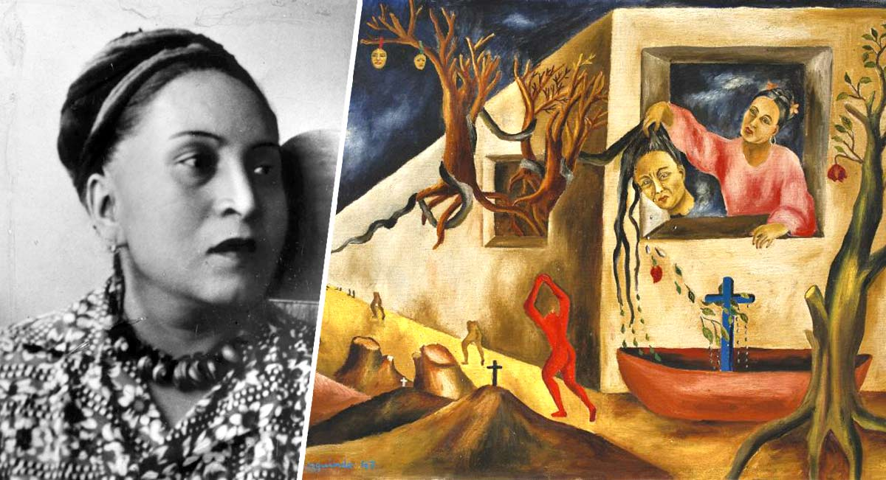

Si las mujeres que leen son peligrosas, imagina lo que son las mujeres que crean, que escriben, que pintan.
Sin embargo, su protagonismo en las artes, es escasa y poco conocida debido a factores como las condiciones sociales e históricas, culturales, educativas, ideológicas y cosmogónicas, hasta prácticas muy puntuales como la que Linda Nochlin* sostiene: la investigación de la historia del arte ha quedado en manos «masculinas».
María de los Remedios Alicia Rodriga Varo y Uranga, conocida como Remedios Varo, fue una pintora surrealista, escritora y artista gráfica española. Fue una de las primeras mujeres que estudiaron en la Real Academia de Bellas Artes de San Fernando de Madrid.
Magdalena Carmen Frida Kahlo Calderón, conocida mundialmente como Frida Kahlo, fue una pintora mexicana reconocida como un icono pop de la cultura de México. Su obra gira temáticamente en torno a su biografía y a su propio sufrimiento.
Aurora Reyes Flores fue una artista plástica Mexicana, primera exponente feminista del Muralismo Mexicano y poeta.
Reyes fue la primera muralista mexicana, conocida también por sus excelentes escritos.
María Cenobia Izquierdo Gutiérrez fue una pintora mexicana, la primera en exponer sus obras fuera de México, en 1930. Su primera exposición tuvo lugar en el Art Center de la ciudad de Nueva York. Aunque la mayoría de sus biógrafos aceptan el año 1902 como el de su nacimiento, algunos otros afirman que fue en 1906.
Celia Calderón, fue una artista mexicana conocida por su trabajo de grabado, al igual que por sus óleos y acuarelas. Formó parte de la Sociedad Mexicana de Grabadores, del Taller de Gráfica Popular y del Salón de la Plástica Mexicana.